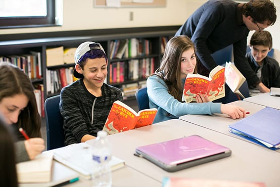
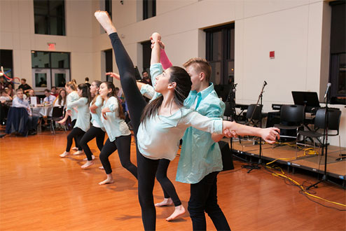

I came to Gann from Dana Hall. If I was asked how Gann compared to middle school, I'd say high school provides a lot more independence. I wake up and I’m excited to go to class and to see friends. At first, I worried that everyone else would already have their friends. But, I quickly learned that everybody at Gann wants new friends and, trust me when I say, there are other kids like you.
8:10
AM
Arrival and Community Block
Wednesday’s a busy day for me. I start the morning with our weekly Student Council meeting. I’m a grade rep, which means I represent the ninth-grade class in all meetings.
G Block: Physics
9:05
AM
Physics is not my strongest subject, but it definitely wakes me up in the morning. This week, we’re starting a Slinky Lab. We’ll be using Slinkys to visualize transversal waves and see how different waves interact or disrupt each other.
10:20
AM
H Block: English
I love my English class! It’s definitely my favorite subject. Right now we’re reading A Raisin in the Sun about a family dealing with racial discrimination. In class we go over what we read the previous night and learn from each other’s takeaways. It’s interesting to find themes from others that I never picked up when I first read the section.
I Block: History
11:15
AM
History at Gann is about learning to learn, not learning for a quiz. We rarely have homework in this class and most of the work is writing based—taking what we learn and developing our own interpretations. Lessons are easy to follow and the teacher posts each lesson to OneNote for us to reference.
12:06
PM
Lunch
I almost always buy food from the Servery, usually pasta with cheese sprinkled on it. You can eat in the dining hall or join friends in a nearby classroom. Depending on the day, students meet for advisory or for clubs as well.
12:40
PM
J Block: Jewish Studies
The ninth grade Jewish Studies course focuses a lot on the holidays and observances. Each unit has an overarching theme. Right now, we’re learning about Passover.
C Block: Dance Foundations
11:55
PM
I’ve danced most of my life. Some of my classmates have danced outside of school, others are new to dance. A lot of this Foundations class is on theory and analysis, but we also dance.
2:50
PM
D Block: Geometry
Not my favorite class but it's still okay.
Mincha (optional)
3:41
PM
This is an optional afternoon prayer time. I take a break during this time and usually connect with friends to chat.
3:55
PM
A Block: Free Block
I don’t play a sport in the spring, instead I work out outside of school. I love using this time to go to sports games and cheer on Gann, or just hang out with friends in the lobby.
5:10
PM
Heading Home
I’m picked up from school by a family friend around five. Depending on the classes for the day, I have anywhere between 45 minutes to an hour and a half of homework. Really, the homework load is about time management. As long as I don’t procrastinate, the homework goes quickly.